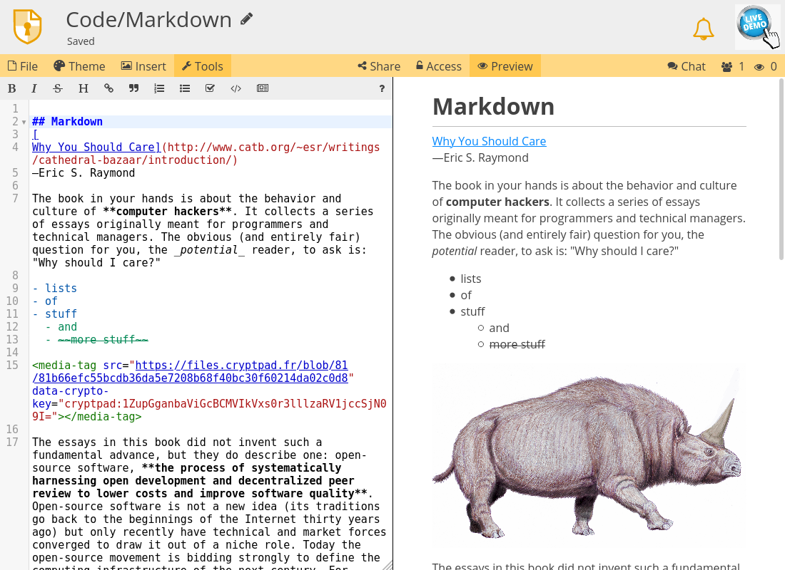

コード / マークダウン#
CryptPadのコード、マークダウンのアプリケーションはCodeMirrorに基づいています。

ツールバー#
ツール：テキストエディターのツールを表示または非表示。
挿入：画像をドキュメントに追加。画像はドライブから選択するかアップロードできます。 ログイン済ユーザー
テーマ：エディターの色を設定。詳細は以下。
プレビュー：マークダウンのプレビューパネルを表示または非表示。
テーマ#
作者ごとの色：各ユーザーが記述したテキストを、ユーザーのカーソルの色で強調します（色はユーザー設定で指定）。アクティブな場合は、
作者の色を隠すと、このウィンドウでの色の表示を無効にします。色の表示は再び有効にできます。また、他のユーザーには有効のままにすることもできます。
作者ごとの色 > 消去して無効にすると、全てのユーザーの色の設定を無効にして、データを削除します。
テーマ：コードエディターのパネルで使用する色テーマ。
言語：ハイライトに使用。
インポート/エクスポート#
.md。エクスポートするファイルの名前にはどの拡張子も入力できます。マークダウン#
コードアプリケーションは特にマークダウンでドキュメントを記述するのに適しています。マークダウンは、可読性を維持しながら基本的なテキストの装飾を可能にする軽量な記法です。マークダウンは、HTMLなど他のフォーマットに簡単に変換することができます。
CryptPadでのマークダウンの記法の例については、以下をご覧ください。
基本的なマークダウンの記法に加えて、以下の機能も利用できます。
[TOC]目次を挿入。Todoリスト
- [ ] taskで未着手のタスクを表現： タスク。- [x] taskで完了済のタスクを表現： タスク。
以下の拡張機能も含みます。
拡張機能を使用するには、マークダウンのコードのブロックに拡張機能の名前を付けてください。例：
``` mermaid
<!-- your mermaid code -->
```
拡張機能の詳細な例については、以下をご覧ください。
画像#
リモートの画像を表示する  などの記法はセキュリティー上の理由でCryptPadでは使用できません。
ログイン済ユーザー
CryptDriveから画像を挿入したり新しい画像をアップロードしたりする場合は、ツールバーの 挿入 メニューを使用してください。
詳細についてはサーバー外のコンテンツをご覧ください。
ギャラリー#
ドキュメントの全ての画像とダイアグラムをウィンドウの最大幅で表示するには、
マークダウンのプレビューで画像またはダイアグラムを
ダブルクリック。矢印キーで選択。
または Esc でギャラリー画面を閉じる。